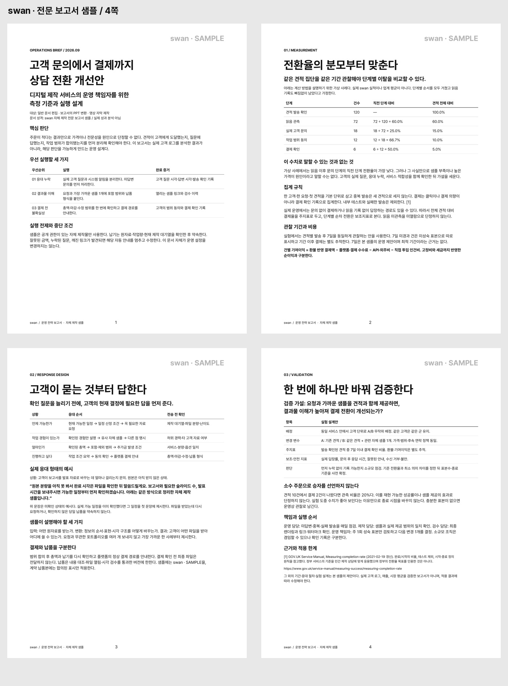
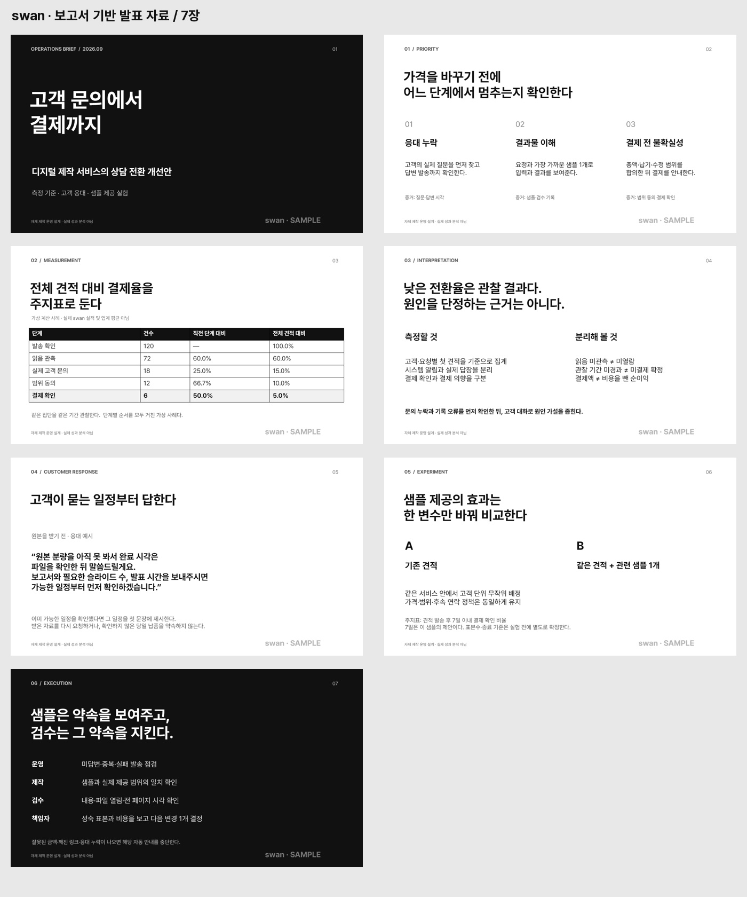

06 / 문서전문 보고서고객 문의와 결제 흐름을 분석하는 운영 설계 보고서 4쪽입니다. 수치는 가상 계산 사례입니다.추천 요청 · 분석 보고서·운영안·기획안파일 받기
07 / PPT보고서의 PPT 변환보고서의 내용을 7장 발표 자료로 옮겼습니다. 편집 가능한 PPTX와 전체 미리보기입니다.추천 요청 · 제공 원고·보고서의 발표 자료 변환파일 받기
08 / 자막한국어 영상의 한국어 자막60초 수정본 v2. 한국어 인터뷰의 긴 쉼을 줄인 발췌본입니다.추천 요청 · 한국어 SRT 자막파일 받기 SRT 받기렌더링 시간축은 대조했으나 최종 음성 청취와 모바일 재생 승인은 별도입니다.
09 / 자막프랑스어 영상의 한국어 자막60초 수정본 v2. 원음을 유지하고 한국어 번역 자막을 넣었습니다.추천 요청 · 한국어 SRT 자막·한국어 번역 자막파일 받기 SRT 받기렌더링 시간축은 대조했으나 최종 음성 청취와 모바일 재생 승인은 별도입니다.
10 / 자막일본어 영상의 한국어 자막60초 수정본 v2. 원음을 유지하고 한국어 번역 자막을 넣었습니다.추천 요청 · 한국어 SRT 자막·한국어 번역 자막파일 받기 SRT 받기렌더링 시간축은 대조했으나 최종 음성 청취와 모바일 재생 승인은 별도입니다.
11 / 자막중국어 지역어 영상의 한국어 자막60초 수정본 v2. 원음을 유지하고 한국어 번역 자막을 넣었습니다. 허난 지역어 소재로 표준중국어 샘플과 구분합니다.추천 요청 · 한국어 SRT 자막·한국어 번역 자막파일 받기 SRT 받기렌더링 시간축은 대조했으나 최종 음성 청취와 모바일 재생 승인은 별도입니다.
12 / 자막영어 원문과 한국어 번역 비교영어 대사와 한국어 번역을 함께 보여주는 21초 비교 영상입니다.추천 요청 · 영어 영상의 한국어 번역 자막파일 받기 SRT 받기기존 번역 교차 검수와 독립 전사 기록 보유. 모바일 최종 청취 승인은 별도입니다.